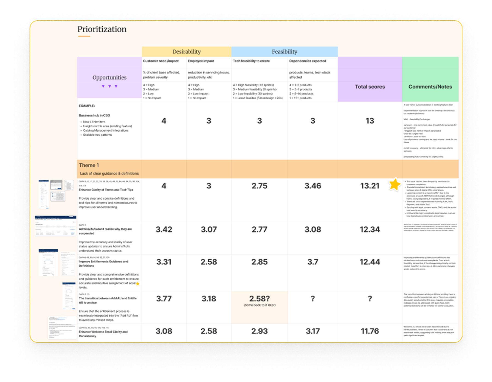
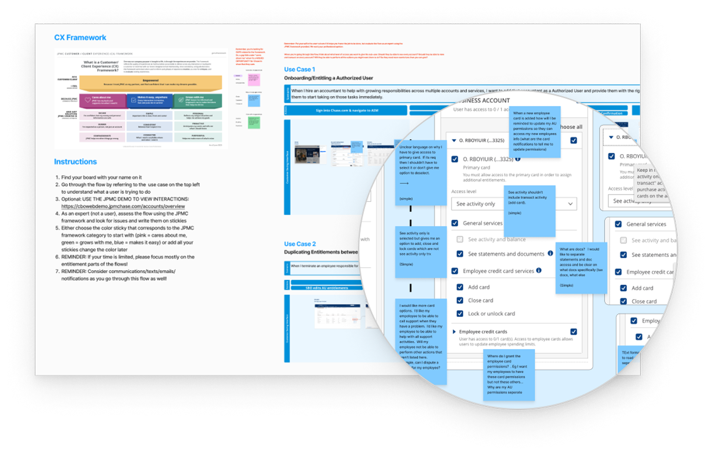

Leading US Bank · Business Banking
The Journey to a Customer-Centric Access Platform
When customers can't confidently grant access to their own accounts, they either call support or over-privilege their employees. Both signal a broken experience. I led the UX strategy for ASM — a permissions platform serving 8.7M business customers — driving cross-functional alignment and validated concept design toward a simpler, clearer way to delegate access.
Engagement Overview
A Five-Phase Journey from Alignment to Delivery
This engagement spanned two years — each phase building on the last, moving from a shared understanding of the problem through validated design concepts to MVP execution currently in delivery.
My Contribution
What I Led Across This Engagement
As UX Design Lead, I owned the research direction, facilitated cross-functional alignment, and synthesized evidence into actionable design direction — bridging customer needs, business goals, and technical constraints across a complex, multi-stakeholder organization.
Overview
What is Access & Security Manager?
ASM is the bank's entitlement platform — the system through which business customers manage user access, roles, and permissions across their banking accounts. It is the operational backbone of how organizations control who can do what within their accounts.
The platform spans three distinct banking segments — Business Banking, Commercial Banking, and Private Banking — each with its own administrator tier, complexity level, and user expectations. Despite its critical role, ASM had grown fragmented, inconsistent, and difficult to use over more than a decade of organic growth.
Our Customer
Meet Janet — The Small Business Owner at the Center
The primary ASM user is a small business owner like Janet — someone running a local business who needs to give trusted employees the right level of access to company accounts, without needing a banking or IT background to do it.

The Problem
Where Today's ASM Falls Short
Three persistent pain categories surface across every research touchpoint — representing failures at ASM's most fundamental job.

What We Heard
Straight From Our Customers
"I like having other people sign in to the account and have access — but it's not the most streamlined process."
— Business Banking Customer, September 2023
Cross-Functional Alignment
There's No Simple, One-Size-Fits-All Approach
Solving ASM required alignment across four disciplines — Design, Technology, DCE (Digital Customer Experience), and Data. I facilitated the Quad alignment model to ensure every decision was grounded in the customer, not internal priorities.
Aligning on the Problem
Starting With a Shared Understanding of the Job
Before any research or design work could begin, the team needed a common definition of what ASM was supposed to help customers accomplish. I anchored the initiative on a single customer job-to-be-done and facilitated alignment on the frictions that made it hard to achieve.
Vision & Success Criteria
What We Set Out to Build
Discovery Journey
A Multi-Milestone Research Program
I structured discovery as a sequenced research program — each milestone building on the last, from platform assessment through validated concept directions. The goal was a complete evidence base before any design direction was committed to.

Profile Harmonization
Four Validated SMB Personas
I led a cross-functional harmonization workshop with 25 attendees to align on who ASM's customers actually are. We converged on four personas — each mapped to their organizational role, access level, and entitlement complexity. These became the shared language across product, marketing, and customer success.


Profile Harmonization Workshop
The profile harmonization workshop brought together 25 cross-functional attendees to align on a shared set of SMB personas — validating the Business Owner archetype as the primary ASM user and establishing a common language across product, marketing, and customer success.

Research Synthesis
Six Key Customer Themes
Six themes emerged as the defining expectations of business banking customers — forming the design criteria against which every concept direction was evaluated throughout the initiative.
Profile Harmonization Quant Study
Quant Study Results — Executive Summary
Goal: To identify the "actors of influence" that SBOs work and consult with in their businesses. (Sept. 2023)
4 personas consistent with prior work. 3 new: AP&R, CFO, AP. General Manager removed.
Discovery Journey — Step 2
Understand Our Product
Activity: ASM CX Assessment · Outcome: Prioritized gaps in our ASM product backlog.
ASM CX Assessment
100+ Gaps, RICE-Prioritized for Impact
I led the CX Assessment of Business Banking and Digital across 3 product features and 3 customer use cases. Service blueprinting and heuristic evaluation with 14 evaluators produced a severity-rated finding set that anchored the design backlog.
Service Blueprint — 4 Key Gap Types
5 Top Gap Themes — RICE Scored
-
01Navigation & WayfindingCritical
-
02Permission ClarityCritical
-
03Confirmation & FeedbackHigh
-
04Error PreventionHigh
-
05Cross-Segment ConsistencyMedium
RICE Prioritization Matrix
Each opportunity was scored across desirability and feasibility dimensions — customer need, employee impact, technical complexity, and dependencies — to produce a total RICE score that anchored the design backlog and stakeholder prioritization conversations.

Service Blueprint
The service blueprint maps the end-to-end experience of a business owner managing employee access — from initial setup through ongoing changes — connecting frontstage customer actions to backstage systems and surfacing the moments of friction, confusion, and drop-off that the redesign needed to address.

Heuristic Evaluation
The heuristic evaluation assessed ASM across 3 core use cases — adding a user, editing permissions, and removing access — rating each against a CX framework to surface the most critical usability failures.

Future State Explorations
From Assessment to Vision
With a clear evidence base established, the team moved into future state exploration — testing role-based template concepts with BRMs, running blue sky concept tests, co-creating with customers, and benchmarking the current experience.
BRM Advisory Board
Strong Enthusiasm for Role Templates — With Important Nuance
BRMs provided strong enthusiasm and support for role-based templates as a concept. The advisory conversations also revealed that the nuances of what permissions are best for each role template — and how to handle custom roles — required further research before locking in a specific approach.
Blue Sky Concept Test
Concepts Tested
We kicked off the design of the blue sky concepts with two distinct prototypes based on ideas pulled from research, gap discovery work, heuristic evaluations, and collaboration from the entire product team.
Prototype A — User-Focused Concept
A reimagined Access & Security Manager dashboard giving admins an at-a-glance summary of user actions, pending transactions, and their own profile — reducing time-to-task from the first screen.

Prototype B — Company-Focused Concept
A refreshed Access Manager home with a consolidated user list, quick-action shortcuts, and a proactive Insights panel surfacing security alerts and pending approvals in context.

What the Prototypes Revealed
Co-Creation Workshop
Four Concepts, Co-Designed With Customers
Workshop goal: conceptualize a next-gen entitlements experience enabling business owners to quickly, confidently, and securely assign permissions based on employee roles. By end of Day 2, the ASM Quad, product partners, and 6 SB customers had co-designed and tested 4 user-centric solutions.


Key Findings Across All Concepts
What SBOs Told Us
Four consistent signals emerged across all tested directions — forming the foundation for the refined design approach and informing every subsequent design decision.
Benchmark Test
Validating the Gaps With Real Data
250+ BB/CML/PB users were tested on 3 flows in current-state ASM: adding a sub-user (Accountant), adding their entitlements, and promoting a user to proxy admin. The results confirmed the severity of the identified gaps — and established the baseline to measure the redesign against.
Refined Entitlement Concepts
Three Directions Tested With BRMs and Customers
The team iterated on the top co-creation directions and tested three refined concepts with Business Relationship Managers and customers. Each direction addressed the core research findings from a distinct angle, with clear tradeoffs for engineering prioritization.


Dual Track Roadmap
Two parallel tracks defined our path forward — Modernization for incremental CX improvements, and Redesign for the full future-state entitlements experience.

What We Learned
Key Takeaways From Define Phase
Testing three distinct entitlement models surfaced a consistent signal. These learnings directly shaped the design refinement work in Phase 4.
Research Insights
What Refined Testing Revealed


Actionable Design Principles
What Goes Into the Next Design Iteration
Where We Are Today
From Discovery to Delivery
The team is currently executing the MVP Entitlements redesign — moving the Octagon component work forward by migrating the legacy BlueJS implementation to React, paired with targeted design enhancements that address the highest-priority CX gaps identified across two years of research.
Delivery Roadmap

MVP Delivery · 2026
The MVP Entitlements Experience
The first shippable milestone — a redesigned entitlements flow built on the Octagon component system, incorporating the highest-priority CX improvements identified through research. The longer-term north star, a fully role-based entitlements experience, is currently back in active discovery.

Retrospective
What We've Learned Along This Journey
Outcomes
A Multi-Year Foundation — Now in Delivery
The initiative delivered a comprehensive research and strategy foundation that aligned leadership across product, engineering, and business lines — and a delivery roadmap now actively driving multi-year investment in ASM's future.
"This project is the work I'm most proud of in my career — not because of the designs, but because of what it took to get there. Leading a two-year initiative from discovery through definition, design, and MVP delivery at this scale required as much facilitation, alignment, and strategic clarity as it did design craft. It taught me that great design leadership means making the complex navigable — for your team, your partners, and ultimately your customers."
What's Next
Role-Based Design Meets SecureAccess
With the MVP entitlements redesign in delivery, the next chapter brings two parallel threads together — a return to role-based discovery to design and validate the full entitlements experience, and the introduction of SecureAccess, a vision for what ASM becomes when AI is built into the core of how access is managed.
"ASM told me what the problem was. SecureAccess is my vision for how AI could finally solve it."